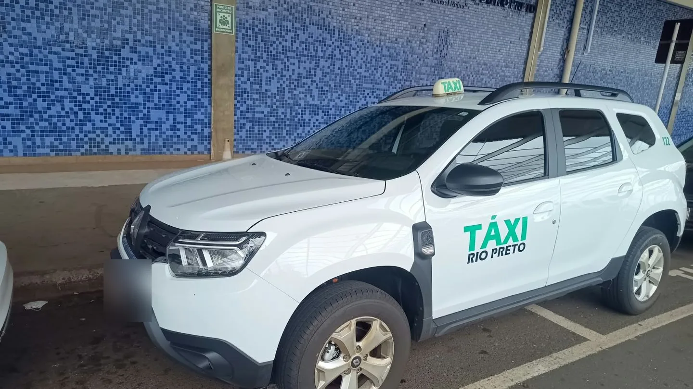
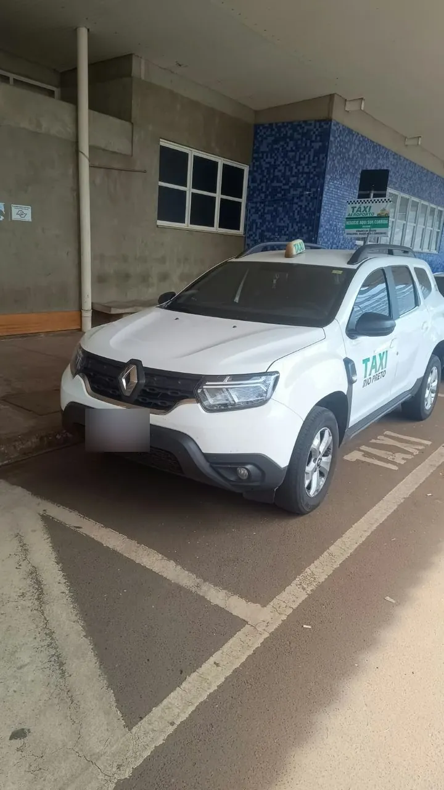
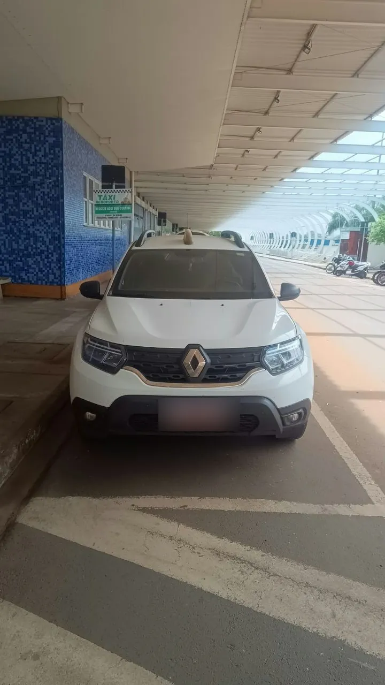

Viagens em geral
Deslocamentos para diferentes destinos, conforme disponibilidade e combinação prévia.
Consultar viagemTáxi Aeroporto · Ricardo
Transporte executivo, aeroporto e viagens agendadas em São José do Rio Preto e região. Atendimento 24h com agendamento prévio e confirmação de disponibilidade.

Viagens em geral
Transporte executivo
Agendamento 24h
Como posso ajudar
Conte ao Ricardo sobre sua viagem. Vocês combinam o trajeto e o melhor horário diretamente pelo WhatsApp.
Deslocamentos para diferentes destinos, conforme disponibilidade e combinação prévia.
Consultar viagemUma opção prática para seus compromissos profissionais e deslocamentos planejados.
Consultar disponibilidadeCombine seu traslado ao aeroporto ou consulte outros serviços de transporte.
Combinar trajetoAtendimento 24h com agendamento. Confirme disponibilidade e detalhes diretamente com o Ricardo.
O veículo
Uma Renault Duster 2025 branca, identificada como táxi de Rio Preto, pronta para os trajetos combinados com você.
Converse com o Ricardo

Experiência que acompanha você
Ricardo trabalha com transporte desde 2016. O atendimento é feito diretamente com ele, para alinhar o destino, o horário e os detalhes da corrida antes de confirmar.
Fale diretamente com o RicardoSem complicação
O primeiro passo é uma conversa. A confirmação acontece após alinhar a disponibilidade.
Informe origem, destino, data e horário desejados.
Alinhe horário, trajeto e disponibilidade diretamente com o Ricardo.
A corrida fica combinada depois do retorno do Ricardo.
Antes de viajar
Se precisar confirmar outro detalhe, fale diretamente com o Ricardo.
Perguntar pelo WhatsAppInforme origem, destino, data e horário pelo WhatsApp. Ricardo confirma o orçamento e a disponibilidade antes do agendamento.
Não. Abrir o WhatsApp ou enviar uma mensagem não confirma a corrida. Aguarde o retorno do Ricardo e a combinação dos detalhes.
O atendimento é 24h com agendamento. Fale com o Ricardo para consultar disponibilidade e aguarde a confirmação da viagem.
Você pode consultar viagens em geral, transporte executivo, trajetos ao aeroporto e outros serviços de transporte, conforme disponibilidade.
Envie uma mensagem pelo WhatsApp com o destino e a data desejada. O Ricardo alinha os detalhes com você e confirma se há disponibilidade.
Sim. As viagens são combinadas previamente pelo WhatsApp, inclusive para atendimento 24h.
São José do Rio Preto e região. Consulte o Ricardo para confirmar a disponibilidade e a cobertura do seu trajeto.
Sua próxima viagem
Converse com o Ricardo e consulte a disponibilidade para a data que você precisa.
Agendar minha viagemAtendimento 24h com agendamento